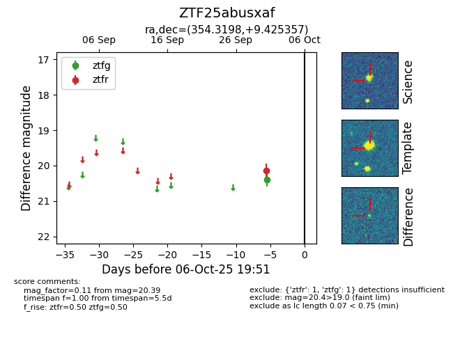

FINK: ZTF25abusxaf
Lasair: ZTF25abusxaf
ALeRCE: ZTF25abusxaf
ZTF25abusxaf (ztf,fink)
equatorial (ra, dec) = (354.3198,+9.42536)
galactic (l, b) = (94.2026,-49.26507)

last ztfg=20.39, ztfr=20.14
1 ztfg, 1 ztfr detections